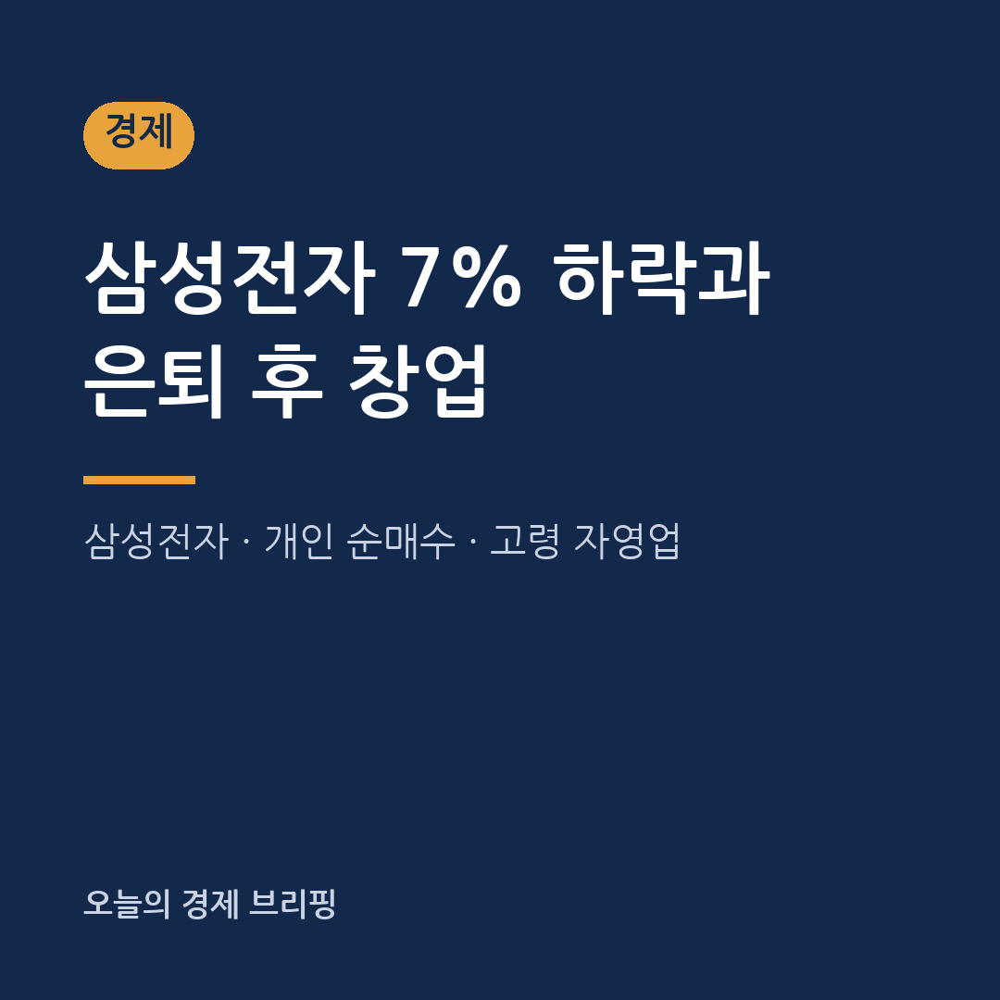
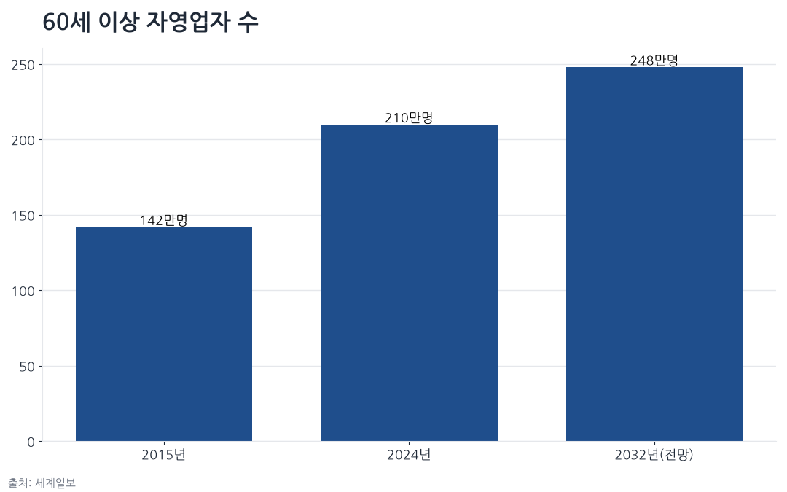

2026-11-21-1530-naver 발행 키트 · 이 페이지는 검색에 노출되지 않습니다.
제목
카테고리
경제태그
본문 (그림·표 포함)
휴대폰 블로그 앱에서는 그림이 같이 붙지 않을 수 있어요. 그때는 [글자만 복사] 후 아래 이미지를 저장해 [그래프1]·[표1] 자리에 첨부하세요.

주말 오후, 지난 금요일 주가 화면을 다시 열어보신 분들 많죠. 오늘은 그날 숫자를 차분히 정리하고, 은퇴를 앞두고 가게를 고민하는 분들께 도움이 될 소식도 함께 전해드릴게요.
▶ 20일 증시, 삼성전자가 7% 넘게 빠졌어요
20일 코스피는 5.21% 내려 4,869.96에서 마감했어요. 삼성전자는 7.01% 하락한 183,100원, SK하이닉스는 5.92% 하락한 1,113,000원으로 장을 마쳤고요.
반도체 두 종목이 지수를 크게 끌어내린 하루였어요.
11월 20일 증시 마감
| 대상 | 등락률 | 종가 |
|---|---|---|
| 코스피 | -5.21% | 4,869.96 |
| 삼성전자 | -7.01% | 183,100원 |
| SK하이닉스 | -5.92% | 1,113,000원 |
출처: 세계일보
▶ 판 사람은 외국인·기관, 받은 사람은 개인이었어요
재미있는 건 투자자별 움직임이에요. 삼성전자와 SK하이닉스가 속한 유가증권시장 전기·전자 업종에서 개인투자자는 1조5178억원어치를 더 샀어요.
더 샀다는 건 사들인 금액이 판 금액보다 많았다는 뜻의 순매수예요. 같은 업종에서 외국인과 기관은 합쳐서 2조원 가까이 팔았다고 해요.
▶ 목표주가는 내리고 이익 전망은 올린 곳도 있어요
증권가 시각도 한 방향은 아니에요. 모건스탠리는 삼성전자 목표주가(증권사가 제시하는 적정 주가 전망치)를 381,000원에서 309,000원으로 약 19% 낮췄어요. SK하이닉스는 260만원에서 160만원으로 약 38% 내렸고요.
그런데 내년 영업이익 전망치는 반대로 삼성전자 9%, SK하이닉스 13% 올렸다고 해요. 키움증권은 삼성전자 29만원, SK하이닉스 180만원을 제시했어요.
모건스탠리 목표주가·내년 영업이익 전망 조정
| 종목 | 목표주가 변경 | 내년 영업이익 전망 |
|---|---|---|
| 삼성전자 | 381,000원 → 309,000원 | 9% 상향 |
| SK하이닉스 | 260만원 → 160만원 | 13% 상향 |
출처: 세계일보
주가 전망은 낮추면서 이익 전망은 높였다는 점, 이게 이번 뉴스의 포인트예요. 다만 증권사 전망은 어디까지나 참고 자료일 뿐이에요.
▶ 지갑을 지키는 체크포인트
이런 급락일에는 남들이 샀다는 숫자에 마음이 흔들리기 쉬워요. 내 투자 기간과 감당할 수 있는 손실 폭을 먼저 적어보는 게 좋겠어요.
빚을 내서 투자하고 있다면 이자 부담과 상환 일정도 한 번 점검해 보세요.
▶ 은퇴 후 가게 차리는 분들, 정부가 연구에 들어가요
다른 소식도 있어요. 1964~1974년생 2차 베이비부머가 954만명인데, 은퇴가 본격화되고 있어요. 이분들 중 은퇴 뒤 창업에 나서는 분이 늘 걸로 보여, 중소벤처기업부와 소상공인시장진흥공단이 지원 방안을 찾는 연구를 시작했어요.
이 연구는 2027년 1분기에 끝날 예정이라고 해요.
▶ 60세 이상 사장님, 벌써 이만큼 늘었어요
60세 이상 자영업자는 2015년 142만명에서 2024년 210만명으로 늘었고, 2032년에는 248만명이 될 거라는 전망이 나와요. 올해 8월 기준으로도 농림어업을 뺀 60세 이상 자영업자는 152만1,400명으로 1년 전보다 7만7,200명 많아졌어요.

고령층 자영업은 운수창고·숙박음식·도소매·건설업에 65.7%가 몰려 있어요. 비슷한 업종에 사장님이 많아지면 경쟁도 치열해지기 쉬워요.
▶ 은퇴 후 창업을 생각한다면
퇴직금을 한꺼번에 넣기 전에 업종별 경쟁 상황과 필요 자금부터 확인해 보세요. 소상공인시장진흥공단에서 상담과 교육 프로그램이 있는지 알아보는 것도 방법이에요.
한 줄 정리하면, 오늘은 숫자를 보며 침착하게 내 계획을 점검하는 날이에요. 여러분은 요즘 어떤 부분이 가장 걱정되세요? 댓글로 남겨주세요.
이미지 (개별 복사·저장)
출처 (본문 맨 아래에 붙여넣기 권장)
- 세계일보, 삼성전자 7% 폭락에 개미 1.5조 쓸어담았다…목표가도 줄하향 [숫자 뒤의 진실], https://www.segye.com/newsView/20261121501082 - 세계일보, 2차 베이비부머 954만명 은퇴 본격화…정부, 은퇴 뒤 가게 차리는 고령층 지원 방안 연구 착수, https://www.segye.com/newsView/20261120509760